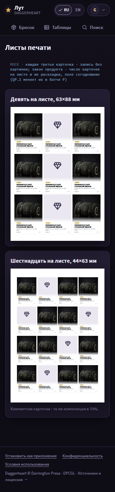
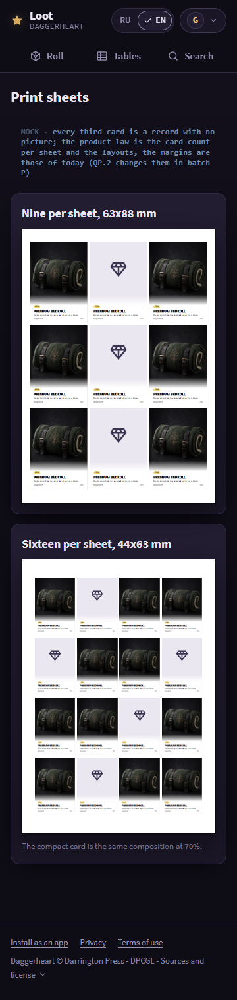
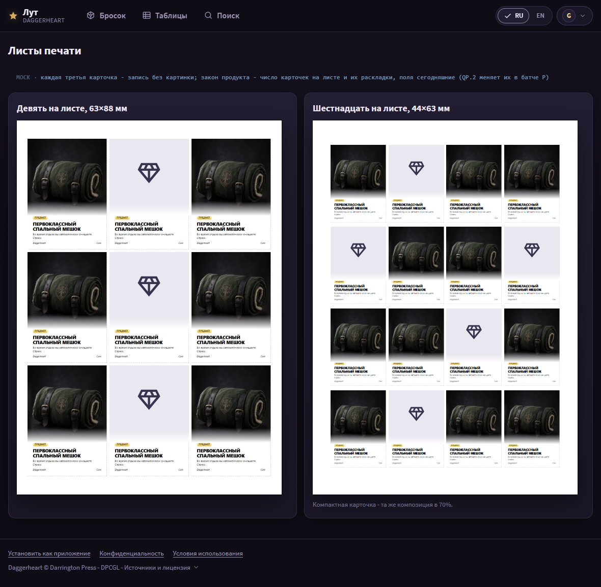
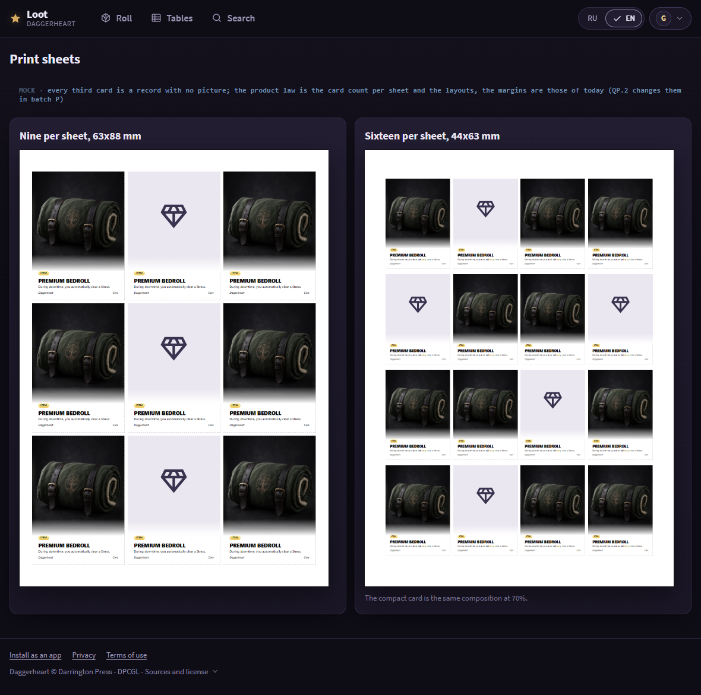
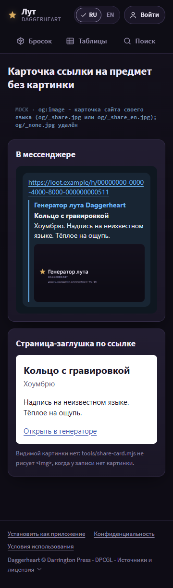
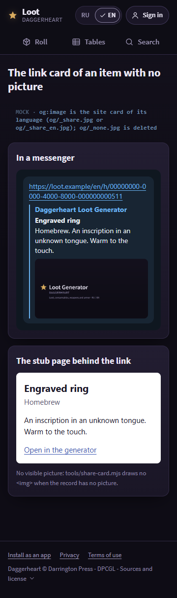
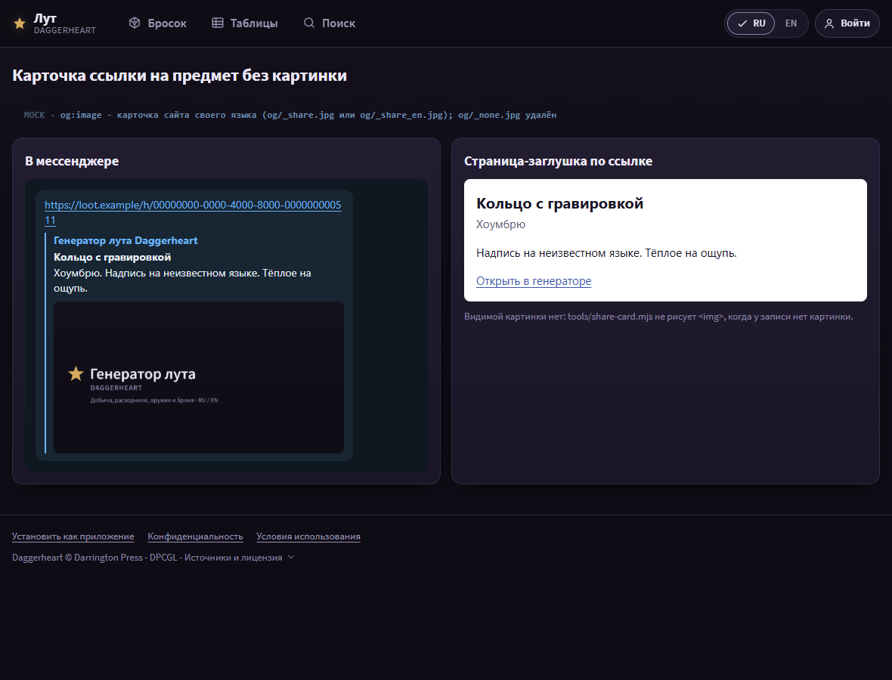
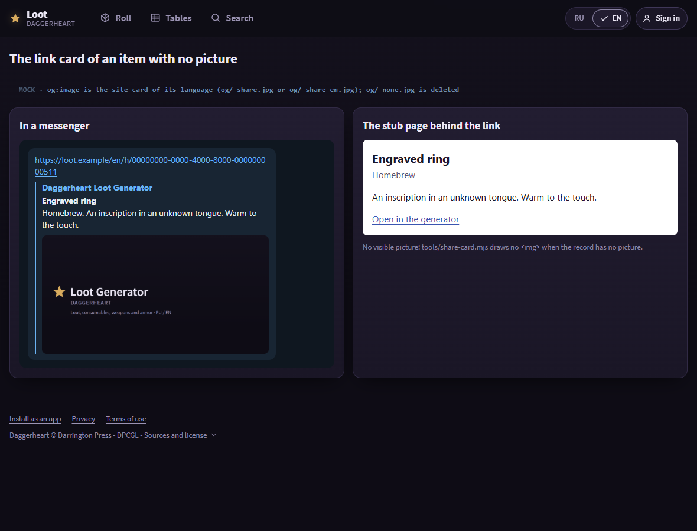

Batch 1b mock: the no-picture placeholder retired
This page shows the batch 1b mock for the owner to confirm: the color print card of a
record with no picture, with the kind glyph on the lighter print well (a paper-side
tone, the glyph in dark ink), the nine- and sixteen-card sheets, the editor's print
preview of one, and the link card of a no-picture item. The screen keeps the dark well;
the black-and-white card stays as it is (Q1b.1); img/_none.webp,
img/thumb/_none.webp and og/_none.jpg are deleted.
The two print values
| Value | Color | Where |
|---|---|---|
| Print well tone | #ebe7f0 |
the art block of a color card with no picture, on paper, on the /p/ sheet and in the editor's print preview |
| Glyph ink | #3a3350 |
the kind glyph on that well |
| Screen well (unchanged) | #0a0810 (--art-well) |
every screen surface of batch 1 |
The /p/ sheet and the editor's print preview show what prints, so they draw the light well too (plan review plan-1-3 R1). The light well with the glyph is a named departure from Figma node 714-42387, which leaves the art area of a card with no picture as blank paper - no outline, no glyph, no tone (owner, 2026-10-29). The print-card state shows the node's blank art block beside the chosen well. The node's hex values need a signed-in Figma inspect; the two values above are the mock's.
No question for the owner in this batch.
States
Each state at 360 and 1180 px in RU and EN. Click a picture for the full PNG; the ru/en
links open the live mock (state.html?s=<state>).
The color print card with no picture · ru · en
With a picture; the chosen light well with the kind glyph; the node's blank art block (as Figma node 714-42387 prints a card with no picture); the dark screen well for comparison; the four kind glyphs in the light well; the black-and-white card, unchanged (the EN page names it in text, because R holds a Russian capture only).


Nine and sixteen per sheet · ru · en
Every third card is a record with no picture. The product law is the card count per sheet (nine or sixteen) and the two layouts; the margins and gutters drawn here (8.5 mm and 14.5 mm, or 14 mm and 19.5 mm, 2 mm gutters) are today's, and QP.2 changes the standard sheet's in batch P (7.75 mm and 13.15 mm).








The editor's print preview · ru · en


The link card of a no-picture item · ru · en
The messenger card takes the site share card of its language as og:image;
the stub page draws no visible picture.








Shared patterns and their owner folder
-
Batch 1b (
mocks/1b/): the print well and the link card of a record with no picture. The art well and the kind glyph on screen are batch 1's.
Changes from direction R and from plan.md
-
Only the item card is drawn: the cards are R's captures of
PrintCard.svelte(the Premium Bedroll for color, the Emberaxe preview for black and white) with a drawn art block over the picture. No capture exists for a consumable, a weapon or an armor color card, and a hand redraw would change a layout of the product law, so those three are shown as glyph tiles in the light well. The well and its geometry are the same for every kind. - The card text in the no-picture cards is the capture's (Premium Bedroll); only the art block is the change.
-
The light print well is
#ebe7f0with the glyph in#3a3350, fading to the paper at its lower edge as the picture does. It is not checked against the Figma color node 714-42387: Figma is not connected in this session (it needs/mcpauthorization). -
The link card uses the approved share card of mock 1
(
mocks/1/share-rec__ru.png,share-rec__en.png). -
Review mocks-1: M1b-1 - kept the light well with the glyph as a named departure from
the node, drew the node's blank art block beside it, and removed the earlier claim
that the
PRINT_GLYPHsilhouettes came from the node (they were the app's own glyphs beforeeb899604). M1b-2 - the drawn block follows the art block of each capture (RU 69.5%, EN 77% of the card), so no dark band shows under it. M1b-3 - the EN page states the unchanged black-and-white card in text instead of showing the Russian capture. M1b-4 - the editor preview centres the card and draws an own item's text (Кольцо с гравировкой / Engraved ring, «Хоумбрю») over the capture's text.
Impeccable critique (Clarity Rule)
- The light well reads as an empty picture slot with a clear mark; the dark ink glyph keeps its contrast on paper and uses less toner than the dark well.
-
At the lower edge of the drawn well a thin seam shows where the capture's own fade
sits under it; the real
pc-artbox draws one fade only. - Clarity Rule: the card needs no text to say it has no picture; the glyph names the kind.
- The own-item text in the editor preview is drawn in the UI face over the capture; the real card sets it in the print card's own fitted type.